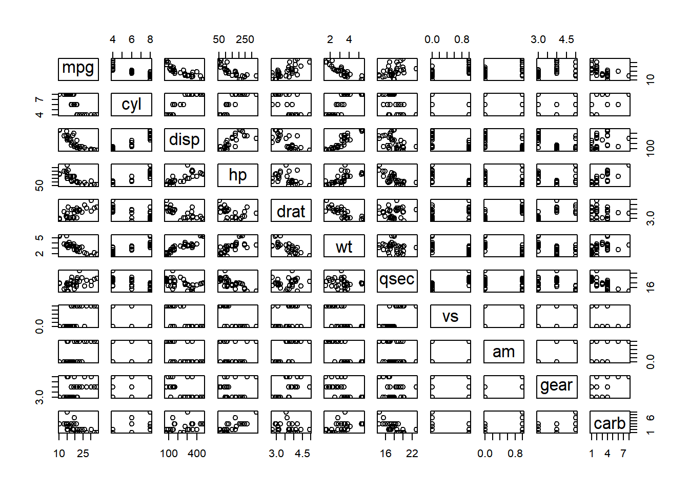

Chapter 3 Memory
Before we understand memory imprint in R. Lets start with a basic concept in functional programming.
- Pure function
- Impure function.
3.1 Pure function
Any function that doesn’t change the state of all objects in R and return the same value are called pure function.
sqrt(2)## [1] 1.414214log(2)## [1] 0.6931472names(mtcars)## [1] "mpg" "cyl" "disp" "hp" "drat" "wt" "qsec" "vs" "am" "gear"
## [11] "carb"functions like these are called pure function. They don’t change anything at all and They return the same output given same input.
3.2 Impure functions
And everything else is impure function. Functions like :
rnorm(2)## [1] -0.4160588 -2.0133703library(data.table)plot(mtcars)
library will load data.table or any package in R and then you can use it afterwards so it does change the current state of R and Plotting is impure for same reason. While rnorm will produce different result on same input every time.
All these functions Either don’t give same output on same input or change the global environment in some way. This is crucial in understanding the next concept.
There are 2 ways an element can be passed in a function.
- pass by value
- pass by reference
3.3 Pass by value
Most of the function in R use pass by value. almost all the function in base R use pass by value. Where you create a copy of the object pass it in a function and then return the value out of it. for example read this code.
a <- mtcars
b <- function(a){
a <- a[1,]
return(a)
}
b(a)## mpg cyl disp hp drat wt qsec vs am gear carb
## Mazda RX4 21 6 160 110 3.9 2.62 16.46 0 1 4 4But it didn’t change the actual a
head(a)## mpg cyl disp hp drat wt qsec vs am gear carb
## Mazda RX4 21.0 6 160 110 3.90 2.620 16.46 0 1 4 4
## Mazda RX4 Wag 21.0 6 160 110 3.90 2.875 17.02 0 1 4 4
## Datsun 710 22.8 4 108 93 3.85 2.320 18.61 1 1 4 1
## Hornet 4 Drive 21.4 6 258 110 3.08 3.215 19.44 1 0 3 1
## Hornet Sportabout 18.7 8 360 175 3.15 3.440 17.02 0 0 3 2
## Valiant 18.1 6 225 105 2.76 3.460 20.22 1 0 3 1in order to change the actual value of a we will have to pass it in a like this.
a <- b(a)
a## mpg cyl disp hp drat wt qsec vs am gear carb
## Mazda RX4 21 6 160 110 3.9 2.62 16.46 0 1 4 4now the a has been change permanently.
3.4 Pass by reference
When you work on huge passing by value could sometime crash your programme. Thus data.table provide pass by reference in almost all of it’s functions.
a <- mtcars
setDT(a)
setnames(x = a,
old = names(a),
new = toupper(names(a)))
a[, b:= character(.N) ]
head(a)## MPG CYL DISP HP DRAT WT QSEC VS AM GEAR CARB b
## 1: 21.0 6 160 110 3.90 2.620 16.46 0 1 4 4
## 2: 21.0 6 160 110 3.90 2.875 17.02 0 1 4 4
## 3: 22.8 4 108 93 3.85 2.320 18.61 1 1 4 1
## 4: 21.4 6 258 110 3.08 3.215 19.44 1 0 3 1
## 5: 18.7 8 360 175 3.15 3.440 17.02 0 0 3 2
## 6: 18.1 6 225 105 2.76 3.460 20.22 1 0 3 1I have a constantly in the previous example.
- converted a from a data.frame to data.table
- changed all the names from lowercase to uppercase.
- added a new empty character column in a
and never in any of the statement have I used the assignment operator.
These techniques are very beneficial when will learn about them later in other chapters. For the time being you must understand that data.table provides you an alternative to use your memory more effeciently.